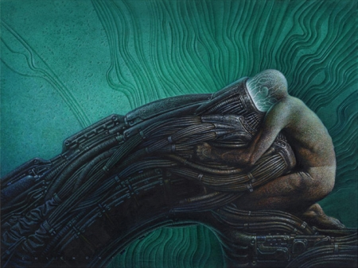

Lo fantástico es un género de la literatura que ha suscitado una gran cantidad de estudios y reflexiones. Por ejemplo, los teóricos franceses Louis Vax (1924) y Roger Caillois (1913-1978) han escrito sendos ensayos en los que definen las causas de lo fantástico en un relato. Para ambos, la fantasía implica una transgresión del mundo real en el cual habita el personaje, un mundo real con el cual está familiarizado el lector. Así, en su libro, Louis Vax argumenta que la narración fantástica se deleita en presentarnos a hombres como nosotros situados súbitamente en presencia de lo inexplicable, pero dentro de nuestro mundo real. Roger Caillois por su parte, lo define como un escándalo, una rajadura, una irrupción insólita, casi insoportable en el mundo real.

El género literario de lo fantástico muchas veces es confundido con otros géneros como la ciencia ficción o el terror. De hecho, la palabra "fantástico" ha sido utilizada en contextos tan variados, que ha perdido gran parte de su significado intrínseco. Las diversas tendencias críticas que han examinado este fenómeno literario, no logran ponerse de acuerdo y sus análisis muchas veces resultan contradictorios. Tanto para el ensayista francés Marcel Schneider (1913), como para el profesor de Lengua Inglesa en la Universidad de Michigan Eric S. Rabkin (1946), todo tipo de ficción no realista es fantástico.
Como es evidente, la literatura fantástica se desarrolló principalmente en el campo de la narrativa y, con especial vitalidad, en el ámbito del cuento que permite un tratamiento más escurridizo y alusivo de las situaciones imaginarias. Es así que, culmina Jaime Rest, la variedad de especies que admite esta producción es múltiple: el horror, lo sobrenatural, lo monstruoso, lo indeterminado, la especulación metafísica, la conciencia de la culpa o del pecado e innumerables experiencias humanas de índole fronteriza y penumbrosa han logrado canalizarse en el área fantástica.
Textos recogidos de direrentes fuentes en Internet que recogen citas diversas de las fuentes citadas
Trilogía del Spawl - William Gibson
Despídete de todos los futuros rancios. He aquí un mundo enteramente nuevo, intenso como una sacudida eléctrica. La prosa de William Gibson, asombrosa por su claridad y oficio, se convierte en poesía eléctrico-tecnológica... Una fascinante historia de aventuras, brillante y coherente como un láser.
William Gibson cuya primera novela El Neuromante puede llamarse la novela ciberpunk, es la llanta mas refulgente del movimiento. Epica en escala, mezcla alta tecnologia con una sensibilidad de cine negro, una especie de Homero que escribe la Odisea saliendole de microchips.
La ficción moderna se retira a pequeños cuartos construidos con las neurosis del presente, unos pocos visionarios están creando una macroficción extrema, madura de ideas, bien escrita, y que ilustra adecuadamente esta época de comunicación global instantánea... William Gibson es la llama más ardiente de ese movimiento.
Neuromante
Un futuro invadido por microprocesadores, en el que la información es la materia prima. Vaqueros como Henry Dorrett Case se ganan la vida hurtando información, traspasando defensas electrónicas, bloques tangibles y luminosos, como rascacielos geométricos. En este espeluznante y sombrío futuro la mayor parte del este de Norteamérica es una única y gigantesca ciudad, casi toda Europa un vertedero atómico y Japón una jungla de neón, corruptora y brillante, donde una persona es la suma de sus vicios.
Conde Cero
Siete años después de los acontecimientos de Neuromante, el Conde Cero, pirata de sistemas de información, consigue una rara pieza de software, se conecta a la matriz, y casi pierde la cabeza. La Matriz de Ciberespacio, una base sinérgica que abarca todo el planeta, se ha transformado en una red sensitiva. Pero la humanidad no se ha dado cuenta. La muchacha cuyo sistema nervioso ha sido alterado para que pueda tener acceso a la Matriz, tampoco entiende lo que ocurre. Mientras, en Francia, la encargada de una galería trata de encontrar al misterioso y desconocido creador de ciertos objetos de arte, poderosos y únicos.
Mona Lisa Acelerada
En el universo alucinatorio del cyberespacio, a la vez lírico y mecánico, erótico y violento, la vida de la joven Mona se cruza inevitablemente con la vida de la famosa Angie Mitchell. Angie ha sido capaz desde niña de entrar en el cyberespacio sin necesidad de una computadora. Dentro de la matriz una entidad fantasmal -que ha acumulado vastas cantidades de información para obtener lo que quiere- pretende utilizar a Angie en una trama que ella misma no puede controlar, ni siquiera entender. Mientras tanto, detrás de todo, se mueve la sombría Yakuza, la despiadada y poderosa internacional japonesa que manipula -o cree manipular-gentes y acontecimientos.